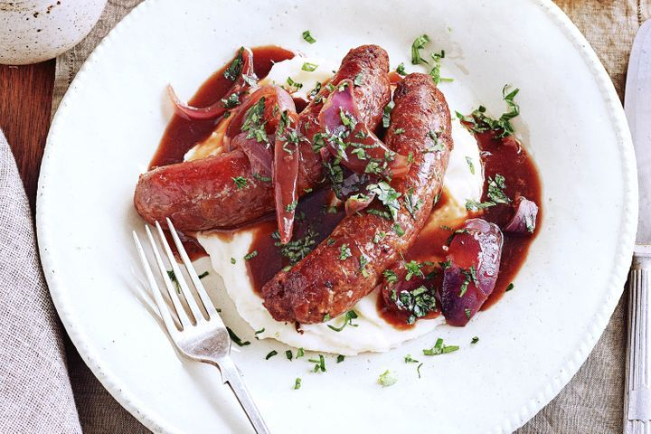

Bangers and mash is a traditional British dish
consisting of sausages (bangers) served with
mashed potatoes (mash) and a rich onion gravy.
It is a popular and classic comfort food, often
found on pub menus. The name "bangers" comes
from British slang for sausages, which historically
would "bang" or burst during cooking due to their
high water content.
ingredients
- 30g butter, melted
- 1 tbsp olive oil
- 8 thick pork sausages
- 1 large red onion, cut into thick wedges
- 1/4 cup salt-reduced traditional gravy powder
- 1/3 cup red wine
- 1 cup Massel beef stock
- 2 tbsp chopped fresh flat-leaf parsley
Steps
- Place potato in a saucepan. Cover with cold water.
Bring to the boil over high heat. Boil for 15
minutes or until tender. Drain. Return to pan
over low heat. Toss for 1 minute or until excess
liquid has evaporated. Add milk and butter.
Mash until smooth. Season with salt and pepper.
- Meanwhile, heat the oil in a large heavy-based
frying pan over medium heat. Add sausages.
Cook, turning, for 10 minutes or until cooked
through. Transfer to a plate. Cover to keep warm.
- Return pan to medium heat. Add onion. Cook,
stirring, for 8 minutes or until softened.
Add gravy powder. Cook, stirring, for 1
minute or until combined. Remove from heat.
Gradually stir in combined wine and stock.
Return to heat. Cook, stirring, for 5 minutes
or until mixture boils and thickens slightly.
- Divide mash among plates. Top with sausages,
gravy and parsley. Serve.